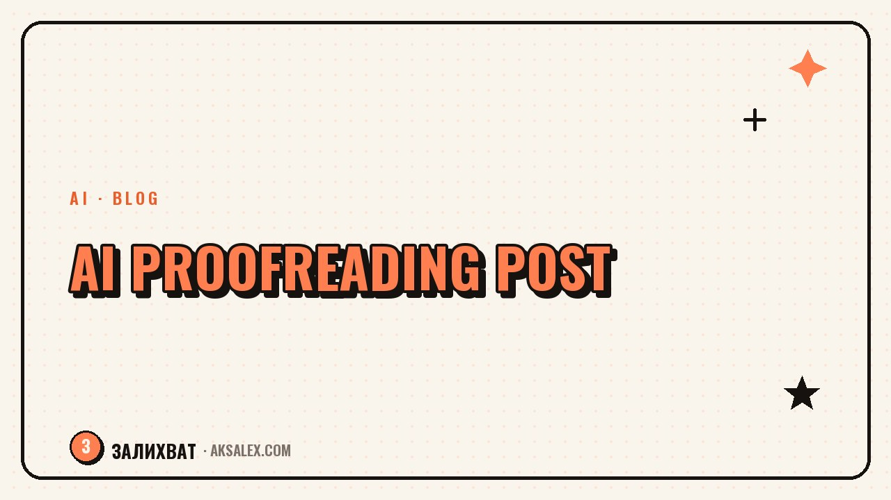

AI Text Editor: How to Proofread a Post Before Publishing

Why AI Proofreading Is Worth It at All
When you write something yourself, your eye glazes over after a couple of paragraphs. You remember what you meant to say, so you don't notice that a phrase came out ambiguous or a sentence stretched across three lines.
AI reads the text without the author's context in its head, so it catches exactly what's written, not what was implied. That makes it a handy second reader before you publish.
- Spots repeated words and repetitive sentence structures
- Flags sentences that run too long
- Catches jargon and clichés
- Checks the logic of transitions between paragraphs
What AI Catches Better Than a Human
A person needs time for a line-by-line read, while AI can highlight every repeated word in a paragraph in seconds, or show you where a sentence is overloaded with parenthetical asides.
Three Things Worth Checking Every Time
- The same word in neighboring sentences
- Long sentences with three or more clauses
- Bureaucratic phrases like 'carry out the process'
| What you're checking | How to phrase the request |
|---|---|
| Repetition | Find the repeated words in this text |
| Sentence length | Show me sentences longer than twenty words |
| Jargon | Find bureaucratic and clichéd phrases |
| Logic | Are there any gaps in the transitions between paragraphs |
What AI Ruins If You Trust It Completely
If you ask AI to 'make the whole text better,' it often smooths out your tone: it removes conversational words, evens out the rhythm of your sentences, and adds phrasings you've never used in speech.
Editing should remove the excess, not rewrite the author's voice from scratch.
So keep one rule: AI highlights the problem spots, but the decision on how to fix them stays with you. You either accept the edit or rewrite the phrase in your own words.
How to Build the Right Request for Proofreading
Don't ask it to 'fix the text' - in return you'll get a full rewrite that doesn't sound like you. Instead, ask it to find specific problems: repetition, long sentences, unnecessary filler words.
- Break the text into meaningful chunks before checking
- Ask for a list of notes, not a finished rewritten text
- Specify that the style should stay conversational
- Cross-check every edit against how you'd say it yourself
This approach takes a bit longer than 'fix everything at once,' but after editing the text stays yours instead of turning into an averaged-out AI version.
A Working Order for Checking a Post
It's convenient to check a text in three passes: first structure and logic, then repetition and sentence length, and finally spelling and punctuation. That way each pass solves one task and doesn't get tangled up with the others.
Step by Step
- Check whether each paragraph's idea is fully developed
- Find repetition and long sentences
- Check spelling and punctuation
- Read the final version out loud before publishing
When to Skip AI Entirely
Personal stories and emotional posts are better proofread by yourself, or given to a real person to read. AI is good at catching technical flaws in a text, but it doesn't always sense where emotion matters more than a smooth phrase.
If after the edits your text reads more evenly but has lost its life, roll back some of the changes. A post people read for its usefulness and a post people read for you are proofread a little differently.
Frequently Asked Questions
Can AI fully replace an editor?
No. It's good at catching technical errors like repetition and long sentences, but it doesn't replace a sense of style or an understanding of who the text is written for.
How do I avoid losing my voice after AI proofreading?
Ask for a list of notes rather than a finished rewrite, and make the edits by hand in your own words instead of copying the version the AI suggests.
Do I need to run every post through AI?
For short posts it's enough to reread it yourself. AI proofreading is especially useful for long texts, guides, and articles, where it's easy to miss a repetition or a gap in the logic.
Which request is best avoided when checking a text?
Avoid the vague phrasing 'make the text better' - it leads to a full rewrite. Phrase specific tasks instead: find repetition, long sentences, or jargon.
Does AI editing ruin emotional posts?
It can, if you trust it completely. Personal stories are better checked partially - only for typos and obvious flaws, leaving the tone untouched.
Enjoyed this one? Here's what to read next. Build a guide with an AI helper: from idea to sale, without a designer or editor.
Read the article →not by hand